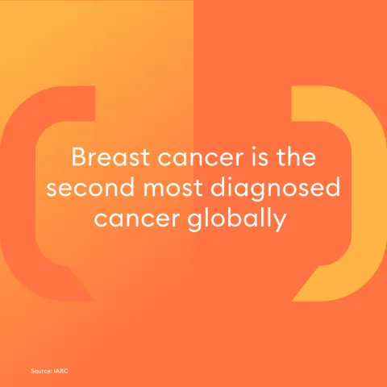
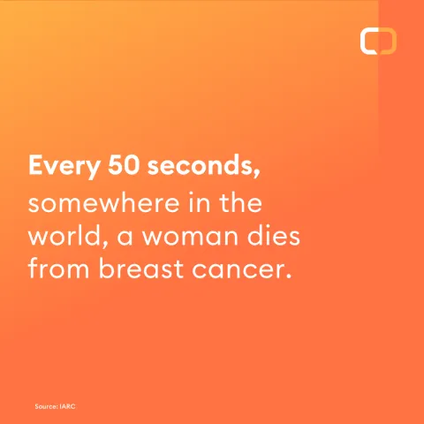
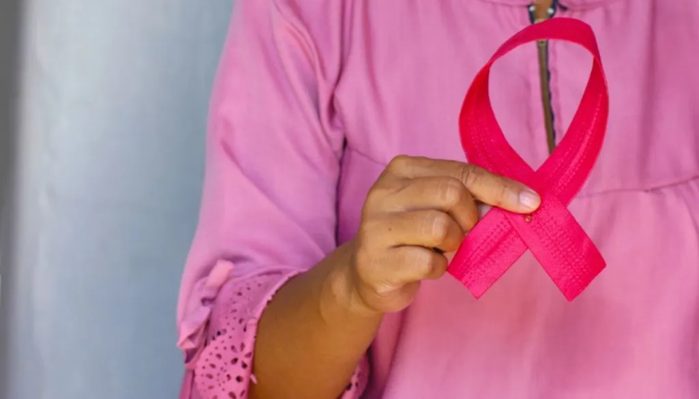

Understanding Breast Cancer

Types of Breast Cancer
Breast cancer is classified into different types, including:
Ductal Carcinoma In Situ (DCIS)
A non-invasive cancer where abnormal cells are found in the lining of the breast ducts.Invasive Ductal Carcinoma (IDC)
The most common type, which spreads beyond the milk ducts into surrounding tissues.Lobular Carcinoma In Situ (LCIS)
Not considered a true cancer but a marker for increased risk.Invasive Lobular Carcinoma (ILC)
Starts in the milk-producing lobules and can spread to nearby tissues.Triple-Negative Breast Cancer
Lacks estrogen, progesterone, and HER2 receptors, making it more challenging to treat.Inflammatory Breast Cancer
A rare but aggressive form where cancer cells block lymph vessels, causing redness and swelling.

Causes and Risk Factors
While the exact cause of breast cancer is unknown, several risk factors can increase the likelihood of developing the disease:
Genetic Factors
A family history of breast cancer or inherited mutations in the BRCA1 and BRCA2 genes.Age
The risk increases with age, especially after 50.Hormonal Factors
Increased estrogen exposure due to early menstruation, late menopause, or hormone replacement therapy.Lifestyle Choices
Poor diet, lack of physical activity, smoking, and alcohol consumption can contribute.Radiation Exposure
Previous radiation therapy to the chest can increase risk.

Symptoms of Breast Cancer
Recognizing the symptoms early can help in timely diagnosis and treatment. Common signs include:
- A new lump or thickening in the breast or underarm.
- Changes in breast size, shape, or appearance.
- Nipple discharge (other than breast milk), especially if bloody.
- Skin changes like dimpling, redness, or peeling.
- Persistent pain in the breast or nipple.

Importance of Early Detection
Early detection is crucial for improving survival rates. Methods include:
Breast Self-Exams
Regularly checking for lumps or abnormalities.Clinical Breast Exams
A physical examination by a healthcare professional.Mammograms
X-ray screening to detect early signs of breast cancer.Biopsy
Removing a small sample of tissue for laboratory testing if abnormalities are found.